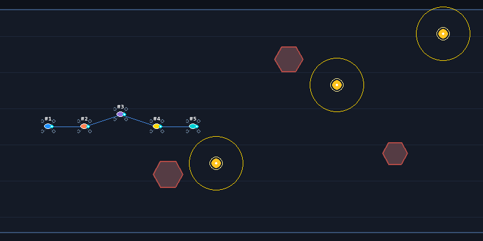

ScrollSwarm


A 2D multi-agent reinforcement learning (MARL) testbed for cooperative UAV swarm reconnaissance, obstacle avoidance, and graph communication.

ScrollSwarm is a lightweight, high-throughput multi-agent simulation where autonomous drones fly forward through an aerial corridor, dodging obstacles while coordinating to photograph targets along their path:
- Corridor & Altitude Control: Drones cruise forward at a constant speed (\(v_{\text{scroll}} = 1\text{ px/step}\)) and choose one discrete vertical action per step: climb up, dive down, or stay level.
- Procedural Obstacles: 2D obstacles of varying shapes and sizes populate the corridor, while a minimum navigable gap (\(G_{\min} \ge 110\text{ px}\)) guarantees paths are never blocked.
- Probabilistic Target Photography: Drones inspect targets within range (\(D_{\text{photo}} = 45\text{ px}\)), where photo success increases with proximity. Spreading across altitudes provides redundancy (\(P_{\text{team}} = 1 - \prod (1 - P_j)\)) so at least one drone captures each target.
- Forward LiDAR & Bearings: Each drone scans forward with 7 LiDAR rays to detect oncoming obstacles and tracks relative bearings to the nearest target and teammate.
- Graph Communication: Living drones exchange messages over configurable network graphs (
chain,ring,full,radius, orcapped) with native PyTorch Geometric (PyG) tensor export. - Crash Handling: Hitting any obstacle or corridor boundary causes that drone to crash immediately, while surviving teammates continue the mission.
Core Architecture
flowchart TD
ENV["<b>1. Aerial Corridor & Swarm State</b>"]
PERCEPTION["<b>2. Perception & Relational Graph</b>"]
POLICY["<b>3. Decentralized Decision Layer</b>"]
KINEMATICS["<b>4. Kinematics & Airspace Drift</b>"]
FEEDBACK["<b>5. Dynamics, Rewards & Feedback</b>"]
ENV -->|Airspace Geometry & UAV Poses| PERCEPTION
PERCEPTION -->|Local Obs 16D & Relational Graph| POLICY
POLICY -->|Discrete Action Commands| KINEMATICS
KINEMATICS -->|Updated Drone Poses & Drift| FEEDBACK
FEEDBACK ==>|Next Step State, Rewards & Dones| ENV
classDef stage1 fill:#1a2332,stroke:#38bdf8,stroke-width:1.5px,color:#f1f5f9;
classDef stage2 fill:#1a2332,stroke:#818cf8,stroke-width:1.5px,color:#f1f5f9;
classDef stage3 fill:#1a2332,stroke:#c084fc,stroke-width:1.5px,color:#f1f5f9;
classDef stage4 fill:#1a2332,stroke:#34d399,stroke-width:1.5px,color:#f1f5f9;
classDef stage5 fill:#1a2332,stroke:#f59e0b,stroke-width:1.5px,color:#f1f5f9;
class ENV stage1;
class PERCEPTION stage2;
class POLICY stage3;
class KINEMATICS stage4;
class FEEDBACK stage5;Key Highlights
| Feature | Description |
|---|---|
| PettingZoo Standard | Natively implements Farama's ParallelEnv for seamless integration with modern MARL libraries. |
| CTDE Ready | Exposes centralized state vectors (\(\mathbb{R}^{16N}\)) for centralized training with decentralized execution (MAPPO, QMIX, MADDPG). |
| Graph Neural Networks | Exports PyTorch Geometric compatible edge_index \((2, E)\) and edge_attr \((E, 3)\) tensors for relational GNN learning. |
| High Throughput | Multi-backend compute engine (NumPy, Numba LLVM JIT, native C++20) delivering up to \(50\times\) isolated raycasting speedup and 1,700+ environment steps/sec per CPU core. |
| Zero Bloat & Pluggable | Pure NumPy baseline by default, with optional C++20 and Numba acceleration selectable via backend="auto". |
Documentation Roadmap
- Installation: Setup instructions with
uvand standardpip. - Quickstart & Visualizer: Launch the interactive Pygame flight simulator and run a minimal 20-line stepping script.
- Environment Specification: Formal Dec-POMDP formulation, kinematics, sensor geometry, and graph communication.
- Tutorials: Hands-on walkthroughs for PettingZoo loops, reactive heuristics, GNN integration, computational geometry acceleration, and multi-core vectorized MARL execution.
- API Reference: Detailed class references and docstrings for all core modules.